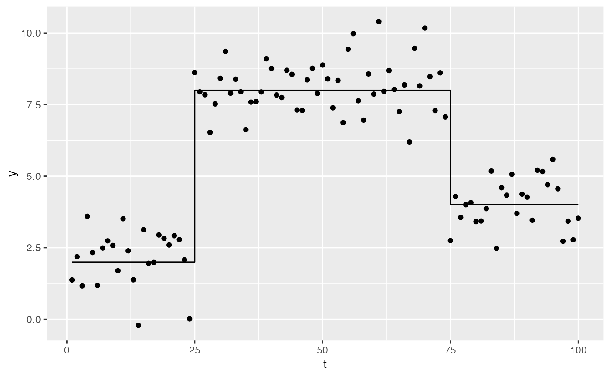

simulate_step_trend.RdSimulate data from a linear trend model
simulate_step_trend(
t,
change_points,
means,
sampling_distribution = NULL,
seed = NULL,
...
)numeric; vector of time points.
numeric; vector of change points, within t
numeric; vector of means for the regimes implied by
change_points. Must be of length length(change_points) + 1.
function; a random number generating function,
which takes as it's first argument the number of observations to sample.
The second argument should be the expected value. The default, if nothing
is supplied, is stats::rnorm().
numeric; a seed for the simulation.
additional arguments that will be passed to
sampling_distribution.
# \dontshow{
set.seed(1)
op <- options(digits = 3, cli.unicode = FALSE)
# }
sims <- simulate_step_trend(1:100, change_points = c(25, 75),
means = c(2, 8, 4))
sims
#> # A tibble: 100 x 3
#> t trend y
#> <int> <dbl> <dbl>
#> 1 1 2 1.37
#> 2 2 2 2.18
#> 3 3 2 1.16
#> 4 4 2 3.60
#> 5 5 2 2.33
#> 6 6 2 1.18
#> 7 7 2 2.49
#> 8 8 2 2.74
#> 9 9 2 2.58
#> 10 10 2 1.69
#> # ... with 90 more rows
library("ggplot2")
ggplot(sims, aes(x = t, y = y)) +
geom_point() +
geom_step(aes(y = trend))

options(op)